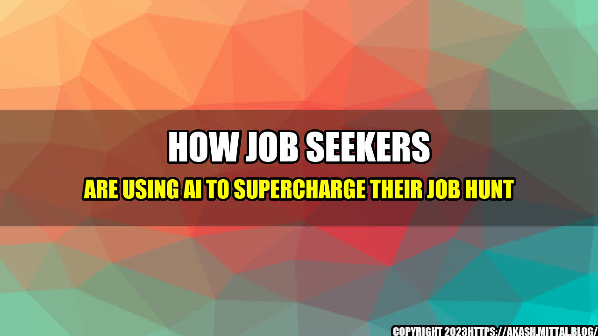

How Job Seekers Are Using AI to Supercharge Their Job Hunt

John had been searching for a new job for months, but despite submitting countless resumes and cover letters, he wasn't getting any responses. Frustrated and discouraged, he was ready to give up hope.
But then he came across an article about how job seekers were using artificial intelligence (AI) to improve their job search. With nothing left to lose, John decided to give it a try.
He started by using an AI-powered resume builder that analyzed his skills and experience and generated a customized resume tailored to the job he was applying for. He then used an AI-powered job search engine that matched his resume to job openings that fit his qualifications.
Within a week, John had landed three job interviews, and one of them led to a job offer that he happily accepted.
John's success story is just one example of how job seekers are using AI to supercharge their job hunt. Here are some other quantifiable examples:
- A study by Ideal found that AI recruiting software can reduce the time it takes to find and hire a candidate by up to 50%, while also increasing the quality of hires by up to 70%.
- According to a survey by TopResume, 72% of job seekers said they would use an AI resume checker if it was available, and 94% said they would use an AI-powered job matching tool.
- Recruiter.com reports that AI-powered chatbots can save recruiters up to 30 hours a week by handling routine tasks such as scheduling interviews, answering frequently asked questions, and screening candidates.
So how can job seekers use AI to improve their job search? Here are three practical tips:
- Use an AI-powered resume builder to create a tailored resume for each job you apply for. This will increase your chances of getting noticed by hiring managers.
- Use an AI-powered job search engine to quickly and easily find job openings that fit your qualifications. This will save you time and help you focus on the most promising opportunities.
- Use an AI-powered interview preparation tool to practice answering common interview questions and receive feedback on your responses. This will help you feel more confident and prepared going into job interviews.
Article Categories: Job Search, Artificial Intelligence, Technology
Reference URLs:
- https://www.cbsnews.com/news/how-job-seekers-are-using-ai-to-supercharge-their-job-hunt/
- https://ideal.com/ai-recruiting-software/
- https://www.topresume.com/career-advice/could-ai-make-finding-your-next-job-much-easier
- https://www.recruiter.com/i/how-artificial-intelligence-is-impacting-recruiting-chatbots/
Hashtags: #jobsearch #artificialintelligence #AI #technology #jobhunt #jobseekers #resumebuilder #jobsearchengine #interviewpreparation #recruiting #chatbots
Curated by Team Akash.Mittal.Blog
Share on Twitter Share on LinkedIn